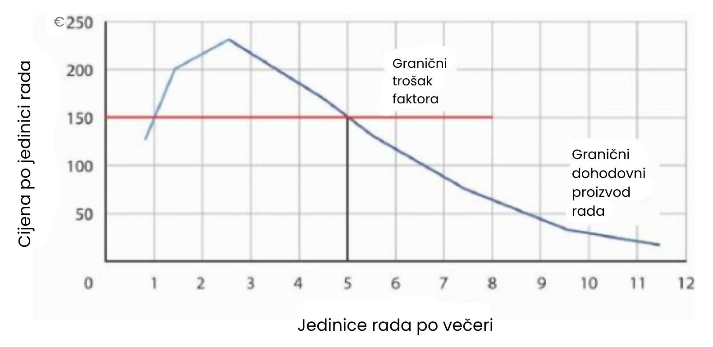

Potražnja za radom
Tvrtka mora imati radnu snagu kako bi proizvodila dobra i usluge. No, koliko će radne snage zaposliti? Tvrtka koja maksimizira dobit donosi odluku o zapošljavanju dodatnih jedinica rada na temelju pravila granične odluke: ako dodatna proizvodnja koju stvori zapošljavanje još jedne jedinice rada pridonosi ukupnom prihodu više nego što povećava ukupne troškove, tada će tvrtka povećati dobit povećanjem korištenja rada. Tvrtka će nastaviti zapošljavati sve više radne snage sve dok dodatni prihod koji stvara dodatna radna snaga ne bude jednak dodatnim troškovima rada.
Na primjer, ako bi tvrtka za računalni softver mogla povećati svoj godišnji ukupni prihod za 50.000 eura zapošljavanjem programera po cijeni od 49.000 eura godišnje, pravilo granične odluke kaže da bi to trebala učiniti. Budući da će programer povećati ukupne troškove za 49.000 eura, a ukupni prihod za 50.000 eura, zapošljavanje tog programera povećalo bi dobit tvrtke za 1.000 eura. Ako bi pak još jedan programer povećao godišnji prihod za 48.000 eura, ali bi također povećao ukupne troškove tvrtke za 49.000 eura, tog programera ne bi trebalo zaposliti jer bi pridonio ukupnom prihodu manje nego što bi povećao ukupne troškove te bi time smanjio dobit.
Granični prihod od faktora i granični trošak faktora
Iznos koji dodatna jedinica nekog proizvodnog faktora pridonosi ukupnom prihodu poduzeća tijekom određenog razdoblja naziva se granični prihod od faktora (MRP – marginal revenue product). Dodatna jedinica proizvodnog faktora doprinosi prihodu poduzeća kroz dva koraka: prvo, povećava proizvodnju poduzeća. Drugo, povećana proizvodnja dovodi do povećanja ukupnog prihoda poduzeća. Granični prihod od faktora izračunava se množenjem graničnog proizvoda (MP – marginal product) faktora s graničnim prihodom (MR – marginal revenue): MRP = MP x MR.
U savršeno konkurentnom tržištu granični prihod koji poduzeće ostvaruje jednak je tržišno određenoj cijeni P. Stoga za poduzeća u uvjetima savršene konkurencije granični prihod od faktora možemo izraziti na sljedeći način: U savršenoj konkurenciji, MRP = MP x P.
Granični prihod od rada (MRPL) jednak je umnošku graničnog proizvoda rada (MPL) i graničnog prihoda (koji je jednak cijeni u uvjetima savršene konkurencije) koji poduzeće ostvaruje od dodatnih jedinica proizvodnje nastalih zapošljavanjem dodatne jedinice rada. Ako dodatni radnik poveća dnevnu proizvodnju poduzeća za 4 jedinice, a svaka od tih jedinica prodaje se za 20 eura, tada je granični prihod tog radnika 80 eura po danu. U uvjetima savršene konkurencije, granični prihod od rada (MRPL) jednak je graničnom proizvodu rada (MPL) pomnoženom s cijenom (P) dobra ili usluge koju radnik proizvodi: U savršenoj konkurenciji, MRPL = MPL x P.
Zakon opadajućih graničnih prinosa govori nam da će, ako se povećava količina jednog faktora dok su ostali inputi nepromijenjeni, njegov granični proizvod s vremenom početi opadati. Ako granični proizvod opada, tada mora opadati i granični prihod od faktora.
Pretpostavimo da je računovotkinja Stephanie Lancaster pokrenula večernju telefonsku savjetodavnu službu za porezne savjete. Između 19 i 22 sata, korisnici mogu nazvati i dobiti savjet u vezi s porezom na dohodak. Tvrtka gospođe Lancaster, TeleTax, jedna je od nekoliko koje nude slične usluge; tržišna cijena iznosi 10 eura po pozivu. Kako se njezin posao širi, gospođa Lancaster zapošljava druge računovođe kako bi odgovarali na pozive. Mora odlučiti koliko će ih zaposliti.
Kako zapošljava sve više računovođa, njezina usluga može obraditi više poziva. Tablica na slici u nastavku prikazuje odnos između broja dostupnih računovođa svake večeri i broja poziva koje TeleTax obrađuje. Dijagram (a) prikazuje porast broja obrađenih poziva po svakom dodatnom računovođi - to je granični proizvod tog računovođe. Prvi računovođa može obraditi 13 poziva po večeri. Dodavanje drugog povećava broj obrađenih poziva za 20. Kod dva zaposlenika moguće je određeno specijaliziranje - svaki se može usredotočiti na pozive iz područja u kojem ima stručnost. Zapošljavanje trećeg računovođe povećava dnevni broj poziva za 23.
Pretpostavimo da računovođe dijele fiksni prostor za zaprimanje i usmjeravanje poziva te zajednički koriste bazu referentnih materijala za odgovaranje na pitanja. Kako se zapošljava sve više računovođa, poduzeće počinje osjećati opadajuće granične prinose. Četvrti računovođa povećava broj obrađenih poziva za 20. Nakon toga granični proizvod dodatnih računovođa nastavlja padati. Krivulja graničnog proizvoda, prikazana na dijagramu (a) na slici, tako najprije raste, a zatim opada.
Svaki poziv koji TeleTax obradi povećava prihode tvrtke za 10 eura. Kako bismo dobili granični prihod od faktora, množimo granični proizvod svakog računovođe s 10 eura; krivulja graničnog prihoda od rada prikazana je na dijagramu (b).

Tablica prikazuje odnos između broja računovođa koje TeleTax zapošljava svake večeri i ukupnog broja obrađenih poziva. Iz tih podataka možemo izvesti krivulje graničnog proizvoda i graničnog prihoda od rada.
Krivulju graničnog prihoda od rada možemo koristiti kako bismo odredili koliko će radne snage gospođa Lancaster zaposliti. Pretpostavimo da su računovođe u njezinu području dostupne za pružanje poreznih savjeta po noćnoj cijeni od 150€. Svaki dodatni računovođa kojeg gospođa Lancaster zaposli povećava njezine ukupne troškove za 150€ po noći. Iznos kojim neki proizvodni faktor povećava ukupne troškove poduzeća u određenom razdoblju naziva se granični trošak faktora (MFC - marginal factor cost). Granični trošak faktora (MFC) izračunava se kao promjena ukupnog troška (ΔTC) podijeljena s promjenom u količini faktora (Δf):
Granični trošak faktora za TeleTax pri zapošljavanju dodatnih računovođa (150€ po noći) prikazan je kao vodoravna linija na sljedećoj slici. To je jednostavno tržišna nadnica (odnosno cijena po jedinici rada).
Silazni dio krivulje graničnog prihoda od faktora poduzeća predstavlja njegovu krivulju potražnje za promjenjivim faktorom. Pri graničnom trošku faktora od 150€, TeleTax zapošljava pet računovođa.
TeleTax će maksimizirati dobit zapošljavanjem dodatnih jedinica rada sve do točke u kojoj se silazni dio krivulje graničnog prihoda od faktora presijeca s krivuljom graničnog troška faktora; na slici vidimo da će tada zaposliti pet računovođa. Na temelju informacija iz tablice sa slike znamo da će pet računovođa obraditi ukupno 93 poziva po večeri; TeleTax će time ostvariti ukupni prihod od 930€ po večeri. Poduzeće plaća 750€ za usluge pet računovođa — preostaje 180€ koji se mogu iskoristiti za pokriće fiksnih troškova povezanih sa savjetodavnom uslugom te implicitnih troškova truda Stephanie Lancaster u organizaciji usluge. Podsjetimo, ti implicitni troškovi uključuju izgubljeni prihod (odnosno alternativni trošak) zbog toga što nije usmjerila svoje resurse, uključujući vlastiti rad, na sljedeću najbolju alternativu.
Ako bi TeleTax morao plaćati veću cijenu za računovođe, suočio bi se s višom krivuljom graničnog troška faktora i zaposlio bi manje računovođa. Ako bi cijena bila niža, zaposlio bi više računovođa. Silazni dio krivulje graničnog prihoda od rada tvrtke TeleTax pokazuje koliko će računovođa zaposliti pri svakoj cijeni rada — to je krivulja potražnje poduzeća za računovođama. To je dio krivulje koji pokazuje opadajuće prinose, a poduzeće će uvijek težiti poslovanju unutar tog područja, tj. tamo gdje faktori donose opadajući dodatni učinak.
Možda se čini nelogičnim da poduzeća ne posluju u području rastućih prinosa, koje odgovara uzlaznom dijelu krivulje graničnog prihoda od faktora. Međutim, time bi propustili prilike za povećanje dobiti. Na primjer, zapošljavanje drugog računovođe povećava prihod za 200€, a trošak za samo 150€, pa je očito da to povećava dobit. No zašto stati tu? Što je s trećim računovođom? Taj dodatni zaposlenik povećava prihod čak za 230€, a trošak ostaje isti. U području rastućih prinosa, granični prihod od rada raste. Ako je granični trošak faktora stalan, a poduzeće ne nastavi zapošljavati do silaznog dijela krivulje graničnog prihoda, propušta prilike za dodatnu dobit. Poduzeće nastavlja zapošljavati dokle god svaka nova jedinica rada pridonosi prihodu više nego što povećava troškove, a to se nužno događa sve do točke u kojoj krivulja graničnog prihoda od rada počne padati.
Općenito, silazni dio krivulje graničnog prihoda od faktora poduzeća možemo tumačiti kao njegovu krivulju potražnje za tim faktorom. Tržišnu potražnju za radom dobivamo zbrajanjem krivulja potražnje pojedinih poduzeća.
Dva pravila vode do istog ishoda
U poglavlju o tržištima outputa u savršenoj konkurenciji naučili smo da će poduzeća koja maksimiziraju dobit povećavati proizvodnju sve dok to povećanje donosi više prihoda nego troška, odnosno sve do točke u kojoj granični prihod (koji je u savršenoj konkurenciji jednak tržišno određenoj cijeni) postane jednak graničnom trošku. U ovom smo poglavlju naučili da će poduzeća koja maksimiziraju dobit zapošljavati radnu snagu sve do točke u kojoj je granični prihod od rada jednak graničnom trošku faktora. Je li moguće da poduzeće koje slijedi pravilo granične odluke za zapošljavanje radne snage na kraju proizvede drugačiju količinu outputa od one koju bi odabralo da je slijedilo pravilo granične odluke za određivanje količine proizvodnje? Postoji li sukob između ova dva pravila granične odluke?
Odgovor je: ne. Ova dva pravila granične odluke zapravo su dva načina izražavanja iste stvari: jedno pravilo govori u terminima količine outputa, a drugo u terminima količine faktora potrebnog za proizvodnju tog outputa. Zapošljavanje dodatne jedinice faktora znači proizvodnju određene količine dodatnog outputa.
Koristeći primjer TeleTaxa: po cijeni od 150€ po računovođi po noći, otkrili smo da gospođa Lancaster maksimizira dobit zapošljavanjem pet računovođa. Granični proizvod rada (MPL) petog računovođe je ΔQ, odnosno 17 poziva. Kod pet zaposlenih računovođa, granični trošak po pozivu je ΔTC/ΔQ = 150/17 = 8,82€, što je manje od cijene od 10€ po pozivu, pa zapošljavanje tog računovođe povećava dobit. Kod šest računovođa, granični trošak po pozivu bio bi 150/13 = 11,54€, što je više od tržišne cijene, pa bi zapošljavanje šestog računovođe smanjilo dobit.
Dakle, količina outputa od 93 poziva (dobivena usporedbom graničnog troška i cijene) sukladna je s količinom rada od pet računovođa (dobivenom usporedbom graničnog prihoda od rada i graničnog troška faktora).
Pomaci u potražnji za radom
Činjenica da je krivulja potražnje poduzeća za radom određena silaznim dijelom njegove krivulje graničnog prihoda od rada daje smjernice o čimbenicima koji će uzrokovati pomicanje te krivulje. U uvjetima savršene konkurencije, granični prihod od rada jednak je graničnom proizvodu rada pomnoženom s cijenom dobra koje se tim radom proizvodi; sve što promijeni bilo koju od te dvije varijable pomaknut će krivulju. Granični prihod od rada promijenit će se kada se promijene količine drugih korištenih proizvodnih faktora. Također će se promijeniti kao rezultat promjene u tehnologiji, promjene cijene proizvoda koji se proizvodi ili promjene broja poduzeća koja zapošljavaju taj rad.
Promjene u korištenju drugih proizvodnih faktora
Kako poduzeće mijenja količine različitih proizvodnih faktora koje koristi, može se promijeniti i granični proizvod rada. Na primjer, veći broj priručnika vjerojatno će učiniti dodatne računovođe produktivnijima - povećat će njihov granični proizvod. To povećanje njihovog graničnog proizvoda povećalo bi potražnju za računovođama. Kada povećanje korištenja jednog proizvodnog faktora povećava potražnju za drugim, ta se dva faktora nazivaju komplementarni proizvodni faktori.
Jedan važan komplement rada je ljudski kapital, skup vještina i sposobnosti koje radnici donose u proizvodnju dobara i usluga. Kada radnici steknu dodatni ljudski kapital, njihov granični proizvod raste. Time raste i potražnja poduzeća za tim radnicima. To je možda jedan od razloga zašto ste se odlučili na studij.
Drugi ulazni faktori mogu se smatrati zamjenjivima. Na primjer, robot može zamijeniti određene vrste rada na montažnoj traci. Dva faktora su zamjenski proizvodni faktori ako povećano korištenje jednog smanjuje potražnju za drugim.
Promjene u tehnologiji
Tehnološke promjene mogu povećati potražnju za nekim radnicima, a smanjiti je za druge. Na primjer, razvoj snažnijeg računalnog čipa može povećati potražnju za softverskim inženjerima. Također može omogućiti automatizaciju drugih proizvodnih procesa i time smanjiti potražnju za radnicima koji su prethodno radili u tim procesima.
Tehnološke promjene znatno su povećale gospodarsku proizvodnju tijekom prošlog stoljeća. Primjena sofisticiranih tehnologija u proizvodnim procesima povećala je granični proizvod radnika koji posjeduju vještine potrebne za korištenje tih tehnologija. Time je porasla potražnja za kvalificiranim radnicima. Iste su tehnologije bile zamjena za manje kvalificirane radnike, pa je potražnja za njima pala. Kao što sugerira primjer o utjecaju računalne tehnologije, važno je imati na umu utjecaj tehnoloških promjena na potražnju za različitim vrstama rada prilikom razmatranja obrazovnih izbora. Kada birate svoje područje studija, imajte na umu da će neke profesije imati koristi od tehnoloških promjena, dok druge možda neće.
Promjene u potražnji za proizvodima
Promjena u potražnji za konačnim proizvodom mijenja njegovu cijenu, barem kratkoročno. Povećanje potražnje za proizvodom povećava njegovu cijenu i povećava potražnju za faktorima koji taj proizvod proizvode. Smanjenje potražnje za proizvodom smanjuje njegovu cijenu i smanjuje potražnju za faktorima koji se koriste u njegovoj proizvodnji. Budući da potražnja za faktorima koji proizvode neki proizvod ovisi o potražnji za samim proizvodom, kaže se da je potražnja za faktorima izvedena potražnja. To znači da je potražnja za faktorima izvedena iz potražnje za proizvodom koji koristi taj faktor u svojoj proizvodnji.
Pretpostavimo, na primjer, da se poveća potražnja za avionima. Cijena i količina dostupnih aviona će porasti. Viša cijena aviona povećava granični prihod od rada radnika koji sastavljaju avione, a time se povećava i potražnja za tim radnicima.
Baš kao što povećanje potražnje za određenim dobrima ili uslugama povećava potražnju za radnicima koji ih proizvode, tako i smanjenje potražnje za određenim dobrima ili uslugama smanjuje potražnju za radnicima koji ih proizvode. Primjer za to je odnos između potražnje za putovanjima vlakom i potražnje za kondukterima. Tijekom godina pad potražnje za putovanjima vlakom smanjio je potražnju za željezničkim kondukterima.
Promjene u broju poduzeća
Krivulju potražnje za bilo kojim faktorom možemo odrediti zbrajanjem potražnje za tim faktorom od strane svih poduzeća koja ga koriste. Ako više poduzeća koristi taj faktor, krivulja potražnje pomiče se udesno. Smanjenje broja poduzeća pomiče krivulju potražnje ulijevo. Na primjer, ako se poveća broj restorana na nekom području, povećat će se i potražnja za konobarima i konobaricama u tom području. Kao rezultat toga, možemo očekivati porast lokalnih plaća za te radnike.
Sažetak
- Pri korištenju modela ponude i potražnje za analizu tržišta rada, u ovom poglavlju pretpostavljamo postojanje savršene konkurencije – da su svi radnici i poslodavci prihvatitelji cijena.
- Krivulja potražnje poduzeća za nekim faktorom proizvodnje jest opadajući dio njegove krivulje graničnog prihoda proizvoda (MRP).
- Tržišna potražnja za radom dobiva se zbrajanjem krivulja potražnje za radom pojedinih poduzeća.
- Tržišna potražnja za radom mijenjat će se kao rezultat promjene u korištenju komplementarnog ili zamjenskog inputa, promjene u tehnologiji, promjene cijene proizvoda koji rad proizvodi ili promjene u broju poduzeća koja zapošljavaju radnike.